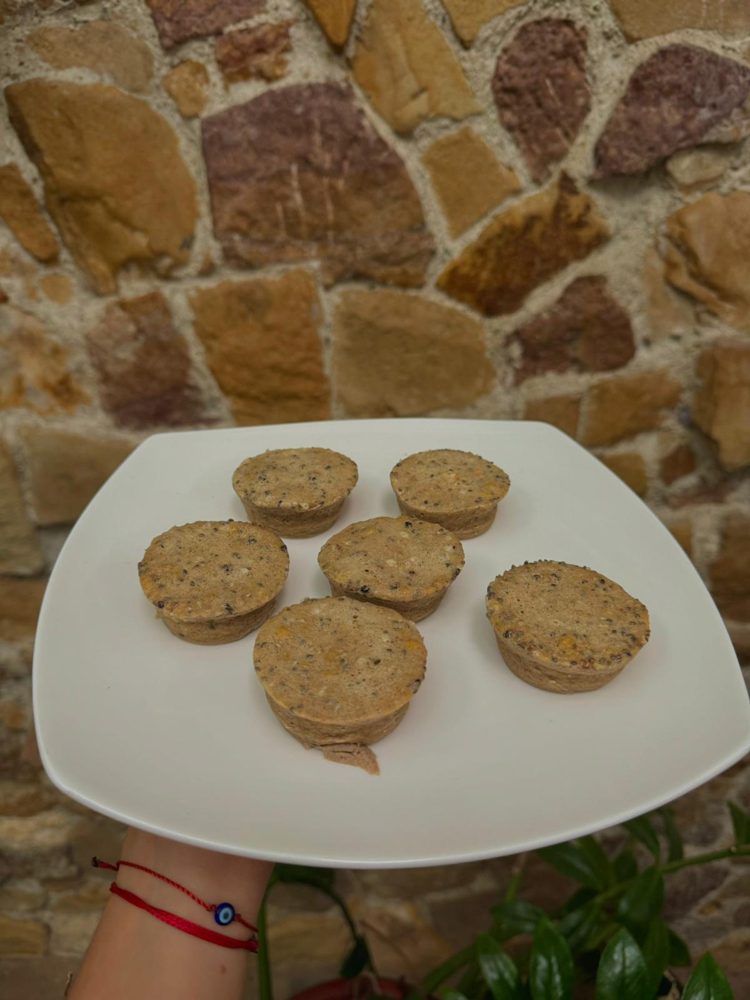
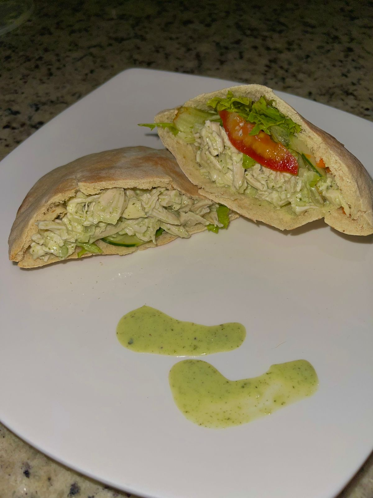

Healthy snacks are essential to maintain stable energy levels and support a balanced diet. Eating nutritious snacks between main meals helps prevent excessive hunger and control cravings for unhealthy foods. Snacks rich in protein, fiber and healthy fats, such as fruits, nuts, yogurt and vegetables, provide important nutrients, improve concentration and performance, and help maintain a healthy body weight. In addition, choosing healthy snacks contributes to better regulation of blood sugar and prevents fatigue, promoting general well-being throughout the day.
Banana Bites
Ingredients
- 1 banana
- Oat
- Protein
Chicken Toast

Ingredients
- Toast
- Chiken
- Lettuce
- Salad dressing
Pita with chicken
Ingredients
- Pita bread
- Chiken
- Lettuce and tomato
- Salad dressing